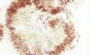
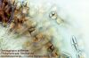

Prácticas de Biología Marina: algas
rojas
Orden Gigartinales
1.-
Características del orden
Gigartinales
| Gigartinales
incl. Criptonemiales (Floridofíceas) |
- Ciclo dimórfico: (gametofito y tetrasporofito
morfológicamente iguales)
- Talo pseudoparenquimático con médula laxa y
filamentosa, uniaxial o multiaxial,
arborescente o laminar, carnoso o cartilaginoso. Excepcionalmente
filamentoso (Thuretella).
- Ejemplos:
- Laminar: Halymenia
- Arbolillo con ramas cilíndricas:
- Arbolillo con ramas aplanadas:
|

|

|

|
2.- Cuadro resumen con las
especies más
comunes
Géneros
|
Especies y
características de los talos
|
Caulacanthus
|
C. ustulatus.
Talo cespitoso con ramas
cilíndricas; ramificación lateral irregular
|
Gigartina
|
|
Talo
pseudoparenquimático
aplanado o cilíndrico, con ramas elásticas, dicotómicas
o laterales - G.
teedii
Ramas aplanadas;
ramificación lateral
|

|
|
Gymnogongrus
|
|
Talo aplanado o casi
cilíndrico, cartilaginoso y
dicotómico - G. crenulatus
Talo aplanado con
dicotomías regulares
|

|
|
Halymenia
|
|
H. floresiana
Talo laminar mucilaginoso, con
divisiones
pinnadas agudas |
|

|
|
Hypnea
|
|
Talo
pseudoparenquimático, blando, con ramas cilíndricas
dispersas alrededor de los ejes; color claro - H. musciformis
Punta de los ejes
recurvadas en forma
de gancho
|
|
|
Peyssonellia
|
|
P. coriacea
Talo incrustante grueso y
carnoso |
|
|
Plocamium
|
|
Talo
aplanado muy ramificado,
con las últimas ramificaciones
pectinadas - P. cartilagineum
Frondes de último
orden con 3-4 puntas
|
|
 |
|
Sphaerococcus
|
|
S. coronopiifolius
Talo aplanado muy ramificado, nervio
medio visible en los ejes |

|
|
3.- Más datos sobre las algas rojas del litoral
atlántico andaluz
(actualizados de C. Romero Zarco, Introducción
al estudio del macrofitobentos marino de Andalucía occidental,
Universidad de Sevilla, guia de prácticas inédita)
A) Esquema
taxonómico del orden Gigartinales
Or. Gigartinales (Florideas)
|
Familias
|
Géneros
|
Caulacanthaceae
|
Catenella
|
Caulacanthus
|
Cystocloniaceae
|
Calliblepharis
|
Cystoclonium
|
Rhodophyllis
|
Furcellariaceae
|
Furcellaria
|
Gigartinaceae
|
Gigartina |
Mastocarpus |
Gloeosiphonaceae
|
Thuretella
|
Gymnophlaeaceae
|
Platoma
|
| Halymeniaceae |
Cryptonemia
|
Halymenia |
| Hypneaceae |
Hypnea |
Kallimeniaceae
|
Callophyllis |
Kallymenia
|
| Peyssonelliaceae |
Peyssonellia |
Phyllophoraceae
|
Gymnogongrus
|
Phyllophora
|
Schottera |
Stenogramme
|
Plocamiaceae
|
Plocamium
|
Polyidiaceae
|
Polyides
|
Solieriaceae
|
Solieria
|
| Sphaerococcaceae |
Sphaerococcus |
15
familias
|
24 géneros
|
B) Clave dicotómica artificial del
orden Gigartinales
Clave 1.- Grupos
artificiales
|
| 1. |
Talo filamentoso, con los ejes
principales formados por una sola fila de células
|
Thuretella
|
1.
|
Talo pseudoparenquimático
|
2
|
2.
|
Talo
formado por ramas cilíndricas
|
Clave
2
|
2.
|
Talo
formado por ramas aplanadas o por láminas
|
3
|
3.
|
Talo formado por ramas aplanadas
pero relatívamente gruesas y estrechas
|
Clave 3
|
3.
|
Talo formado, en toda o en su
mayor parte, por láminas más o menos delgadas en
relación a la anchura
|
Clave 4
|
Clave 2.-
Gigartinales cilíndricas
|
1.
|
Ramificación claramente
dicotómica
|
2
|
1.
|
Ramificación de tipo
lateral o irregular
|
4
|
2.
|
Talo
cerspitoso, con ejes aplanados en el ápice
|
Gymnogongrus
griffithsiae |
2.
|
Talo
no cespitoso ni aplanado en el ápice
|
3
|
3.
|
Zona
de fijación en forma de disco; color rojo burdeos
|
Polyides
|
3.
|
Zona
de fijación ramificada; color pardo verdoso
|
Furcellaria
|
4.
|
Talo cespitoso, de
pequeño tamaño, en general de menos de 3 cm
|
5
|
4.
|
Talo no cespitoso, en general de
más de 5 cm
|
8
|
5.
|
Talo
segmentado
|
Catenella
|
5.
|
Talo
no segmentado
|
6
|
6.
|
Talo pardo-rojizo, formando
almohadillas, con ramificación irregular pero principalmente de
tipo lateral |
Caulacanthus
ustulatus
|
6.
|
Talo rojo-purpúreo o
verdoso, no formando almohadillas, con ramificación
principalmente de tipo dicotómico |
7 |
7.
|
Talo con
organización multiaxial pero
poco visible
|
Gigartina acicularis |
7.
|
Talo con
organización uniaxial |
Hypnea coccinea |
8.
|
Talo
de ramificación lateral, con últimas ramitas mucho
más finas que los
ejes principales; talo uniaxial, con una sola célula apical
visible
|
9
|
8.
|
Talo
de ramificación irregular, con todas las ramas de tamaño
semejante; talo multiaxial o de organización no claramente
visible
|
10
|
9.
|
Talo verdoso o rojo claro; ramas
principales curvadas en el ápice en forma de gancho
|
Hypnea
musciformis
|
9.
|
Talo púrpura o
marrón rojizo; ápices no curvados, pero frecuentemente
con ramas que se enredan a modo de zarcillos
|
Cystoclonium
|
10.
|
Talo
rojo brillante, con varios frondes que nacen del mismo disco basal
|
Véase Cordylecladia en
Or.
Rodimeniales
|
10.
|
Talo
púrpura oscuro o verdoso
|
11
|
11.
|
Médula del talo con
filamentos en la parte central; tetrasporangios zonados (tetrasporas en
fila)
|
Solieria
|
11.
|
Médula del talo
pseudoparenquimática, sin filamentos centrales evidentes;
tetrasporangios cruciados
|
Véase Gracillaria verrucosa en Or.
Gracillariales |
Clave
3.- Gigartinales aplanadas
|
13.
|
Ramificación
dicotómica en todo el talo
|
14
|
13.
|
Ramificación lateral o
irregular, dicotómica sólo en los ejes principales
|
16
|
14.
|
Ramas
más anchas hacia el ápice, acanaladas
|
Mastocarpus
|
14.
|
Ramas
de anchura más o menos uniforme o más estrechas en el
ápice, no acanaladas
|
15
|
15.
|
Talo cilíndrico en la
parte inferior, aplanado sólo en el ápice
|
Gigartina
pistillata
|
15.
|
Talo aplanado en casi toda su
longitud
|
Gymnogongrus |
16.
|
Últimas
ramificaciones del talo pectinadas
|
Plocamium
|
16.
|
Talo
sin ramificaciones pectinadas
|
17
|
17.
|
Talo de tamaño
relativamente grande y muy ramificado; ejes principales con nervio
visible al transluz
|
Sphaerococcus
|
17.
|
Talo de tamaño mediano o
pequeño, dos o tres veces ramificado; ejes sin nervio medio
|
Gigartina
teetii
|
Clave 4.-
Gigartinales laminares
|
1.
|
Talo
regularmente dicotómico
|
2
|
1.
|
Talo
con ramificación irregular o lateral
|
3
|
2.
|
Talo
rígido y cartilaginoso, con los lóbulos superiores
más anchos
|
Mastocarpus |
2.
|
Talo
blando y mucilaginoso, con los lóbulos superiores más
estrechos
|
Platoma
|
3.
|
Láminas
que nacen sobre estipes cilíndricos bien desarrollados
|
4
|
3.
|
Láminas
que nacen directamente de la zona de fijación o de un pie corto
|
6
|
4.
|
Láminas
con proliferaciones laterales muy finas
|
Calliblepharis
jubata
|
4.
|
Láminas
sin proliferaciones laterales o con proliferaciones semejantes a las
láminas
|
5
|
5.
|
Fijación
mediante un disco |
Phyllophora |
5.
|
Fijación
mediante ramas cilíndricas rastreras |
Schottera |
6.
|
Nervio
medio visible en la base de las láminas
|
Cryptonemia
|
6.
|
Sin
nervio medio
|
7
|
7.
|
Talo
con lóbulos terminados en punta
|
8
|
7.
|
Talo
con lóbulos redondeados
|
9
|
8.
|
Talo de consistencia firme y
cartilaginosa
|
Calliblepharis
|
8.
|
Talo de consistencia blanda y
mucilaginosa
|
Halymenia
|
9.
|
Talo ramificado en tres
dimensiones formando un bola
|
Rhodophyllis
|
9.
|
Talo no en forma de bola
|
10
|
10.
|
Talo
postrado o incrustante
|
Peyssonnellia
|
10.
|
Talo
erecto
|
11
|
11.
|
Talo ramificado en forma de
abanico |
Callophyllis |
11.
|
Talo no ramificado en forma de
abanico; médula formada por células de forma estrellada |
Kallymenia |
C) Catálogo alfabético
de los géneros y especies citados hasta 1996 en el
Atlántico andaluz
Calliblepharis
Kütz., 1843. Cistocloniáceas. Dos especies conocidas en la
península, una de ellas exclusivamente atlántica.
| 1. |
Talo con láminas anchas
(más de 1 cm), con proliferaciones generalmente menores de 5 mm
de longitud
|
C.
ciliata |
1.
|
Talo con láminas
estrechas (menos de 1 cm), con proliferaciones que pueden alcanzar 2 cm
o más, algunas terminadas en gancho
|
C. jubata |
C.
ciliata (Hudson) Kütz., 1843. Citada por Clemente en la
Provincia de Cádiz en 1807 (según Conde & al., 1996).
Esciófila infralitoral. Boreo atlántica oriental.
Atlántica en la Península. Talo laminar grueso y
cartilaginoso, más o menos dividido irregularmente y con
proliferaciones en forma de espinitas.
C.
jubata (Good. & Wood.) Kütz., 1843. Citada por Clemente
en la Provincia de Cádiz en 1807 (según Conde & al.,
1996). Infralitoral. Boreo atlántica oriental. Talo laminar
cartilaginoso, con ramificaciones irregulares muy finas y
proliferaciones espiniformes.
Callophyllis Kütz.,
1843. Calimeniáceas. Una sola especie en ambas orillas de la
Península.
C.
laciniata (Hudson) Kütz., 1843. Citada en Cádiz por
Clemente en 1807 (según Conde & al., 1996). Esciófila
infralitoral. Atlántico boreal. Talo laminar de tamaño
mediano, sin nervios, irregularmente dividido en en forma de abanico,
con lóbulos redondeados
Catenella Grev.,
1839. Caulacantáceas. Una sola especie citada en ambas orillas
de la Península.
Catenella
caespitosa (With.) L. Irvine, 1976 (= C. repens Batt.). Poco frecuente en
Cádiz, en fisuras (Seoane-Camba, 1964). Subcosmopolita. Talo
pseudoparenquimático uniaxial, cespitoso, ramificado
irregularmente, con estrechamientos que forman segmentos,
cilíndricos o aplanados; médula laxa, casi hueca. Se
mezcla y confunde con Gelidium
pusillum, que es de consistencia más firme.
Caulacanthus Kütz.,
1843. Caulacantáceas. Sólo se cita una especie
atlántica y mediterránea.
C. ustulatus
(Mertens) Kütz., 1868. Muy frecuente y localmente abundante en
Cádiz (Seoane-Camba, 1965), formando césped en
plataformas y muros de corrales del mesolitoral medio, junto con otras
especies cespitosas o de pequeño porte, como Gelidium pusillum, Gigartina acicularis y Gymnogongrus griffithsiae. Su
máximo desarrollo corresponde al invierno, mientras que en
verano sólo persiste en lugares protegidos. También
citado en Ayamonte (Huelva) por Navarro & Gallardo (1994).
Subcosmopolita.
Cryptonemia J.
Agardh, 1842. Halimeniáceas. Se citan tres especies para nuestro
litoral (1 atlántica y 2 mediterráneas).
C. seminervis J.
Agardh, 1876. Frecuente desde Chipiona hasta Barbate en fisuras del
mesolitoral inferior (Seoane-Camba, 1965). Atlántica. Sin datos
de distribución mundial.
Cystoclonium
Kütz., 1843. Cistocloniáceas. Una sola especie citada en el
Atlántico ibérico.
C.
purpureum (Hudson) Batt., 1902. Citada en la provincia de
Cádiz por Colmeiro en 1867 (según Conde & al., 1996),
pero necesita confirmación, pues según Cabioc'h & al.
(1995) sólo llega hasta el N de España y se puede
confundir con Gracillaria verrucosa.
Fotófila infralitoral de zonas calmas. Atlántico boreal.
Atlántica. Talo pseudoparenquimático, cartilaginnoso,
irregularmente ramificado, con ramas cilíndricas.
Furcellaria,
Lamour., 1813. Furcelariáceas. Una sola especie conocida en la
Península.
F. lumbricaulis
(Hudson) Lamour., 1813 (= F.
fastigiata Lamour.). Citada en la provincia de Cádiz por
González-Fragoso en 1893 (según Conde & al., 1996).
Fotófila infralitoral. Boreo-atlántica.Talo
pseudoparenquimático dicotómico, con ramas
cilíndricas; color pardo verdoso.
Gigartina Stackh.,
1809. Gigartináceas. Tres especies en nuestras costas (2
atlánticas y la otra en ambos mares).
| 1. |
Talo cilíndrico |
G.
acicularis |
1.
|
Talo aplanado, al menos hacia el
ápice
|
2 |
2.
|
Ramificación
dicotómica |
G.
pistillata |
2.
|
Ramificación
lateral |
G.
teedii |
G.
acicularis (Roth) Lamour., 1813. Muy frecuente en Cádiz,
formando césped en lugares resguardados del mesolitoral, junto
con Caulacanthus ustulatus, Gelidium pusillum y Gymnogongrus griffithsiae (Seoane-Camba,
1965). Rara en Huelva, donde ha sido citada de Ayamonte por Navarro
& Gallardo (1994). Fotófila infralitoral portuaria.
Cosmopolita.
G. pistillata
(S.G. Gmelin) Stackh., 1809. Frecuente en Cádiz desde Cabo Roche
hasta Punta Carnero (Seoane-Camba, 1965). Atlántica en la P.I.
Sin datos de distribución mundial.
G. teedii (Roth)
Lamour., 1813. Rara en Cádiz, Caños de Meca y Tarifa
(Seoane-Camba, 1965). Esta especie hibrida al parecer frecuentemente
con G. pistillata dando lugar
a talos con ramificación intermedia entre la dicotómica y
la lateral dística. Atlántica en la P.I. Fotófila
infralitoral portuaria. Subcosmopolita.
| *Gymnogongrus G.
Martens, 1828. Filoforáceas. Son cuatro las especies citadas en
la P.I. (una de ellas exclusivamente atlántica). La
taxonomía de este
género no está aún aclarada. El ciclo
biológico de las especies
europeas es digenético, pues falta el carposporofito. Los talos
de vida
libre corresponden a la fase gametofítica, que es dioica. Los
cistocarpos contienen lo que podría interpretarse como un
tetrasporofito parásito, que produce las tetrasporas ( tetrasporoblasto)
según la bibliografía francesa, o bien como un conjunto
de carpotetrasporangios
(según la bibliografía inglesa). En cualquier caso, lo
que se observa
sobre el gametofito son pústulas formadas por filamentos cortos
y
apretados que forman tretrasporangios cruciformes en cadena. |

Tetrasporoblasto

Carpotetrasporas
|
| 1. |
Planta pequeña y
delicada, de unos 3 cm. Ramas filiformes comprimidas sólo en el
extremo |
G.
griffithsiae |
1.
|
Planta robusta y cartilaginosa,
de al menos 5 cm. Ramas aplanadas, no filiformes |
2
|
2.
|
Ramificaciones
regulares que le dan al talo forma de abanico; cistocarpos en forma de
pústulas que sobresalen por una de las caras del talo
|
G. crenulatus |
2.
|
Ramificaciones
poco regulares; cistocarpos encajados en el talo, sobresaliendo
ligeramente por ambas caras
|
G. devoniensis
|
G. crenulatus
(Turner) C. Agardh, 1851 [= G.
norvegicus (Gunner) J. Agardh; G.
patens sensu auct. non J. Agardh?] Frecuente en Cádiz en
fisuras y rocas del mesolitoral inferior, a menudo llevando como
epífito a Titanoderma
pustulatum (Seoane-Camba, 1965, como G. norvegicus y G. patens). Atlántico
boreal. Según Dixon
& Irvine (1977) no se sabe a qué especie corresponde el
nombre G. patens, puesto que
se desconoce el paradero del material original que sirvió para
su descripción (tipo), pero en las Islas Británica (y por
extensión suponemos que también en Francia), se ha dado
ese nombre a plantas de G. crenulatus.
Estipe
cilíndrico que se continúa de forma insensible con un
sistema de ramas dicotómicas aplanadas.
G. devoniensis
(Grev.) Schotter, 1968. Atlántico boreal oriental. Citada de la
provincia de Cádiz por Fernández & al., 1983
(según Conde & al., 1996). Hay controversia sobre su
separación de G. crenulatus,
en cuya sinonimia lo incluyen Dixon & Irvine (1977).
G. griffithsiae
(Turner) G. Martens, 1833. Frecuente y localmente abundante durante
casi todo el año en comunidades cespitosas mesolitorales de Corallina y Gelidium pusillum, especialmente en
la zona Norte del litoral gaditano (Seoane-Camba, 1965). Borde
mesolitoral inferior. Circumboreal. Talo cilíndrico
dicotómico, cespitoso.
Halymenia C.
Agardh, 1816. Halimeniáceas. 4 especies en la P.I. (una de
ellas exclusívamente atlántica).
H. floresiana (Clemente)
C. Agardh, 1822. Alga relativamente grande y mucilaginosa, de un bello
color rojo vivo que desaparece en el material arrojado. Frecuente en el
litoral NO de Cádiz (Seoane-Camba, 1965). Arrojada en El Rompido
(Huelva, Navarro & Gallardo, 1994). Agregados coralígenos.
Subcosmopolita.
Hypnea Lamour.,
1813. Hipneáceas. Gallardo & al. (1985: 60) citan dos
especies en la P.I. a las que hay que añadir una tercera
conocido hasta la fecha sólo en Cádiz (1
atlántica, otra mediterránea y la tercera en ambas
orillas).
| 1. |
Talo de 2-6 cm, sin ramas
recurvadas en forma de gancho |
H.
coccinea |
1.
|
Talo generalmente de más
de 6 cm, con algunas ramas recurvadas en el extremo en forma de gancho |
H.
musciformis |
H. coccinea
(Clemente) Cremades, in Cremades & Pérez-Cirera, 1990. Muy
rara o quizás pase desapercibida entre otras algas de aspecto
similar (Gigartina y Gelidium). En el Jardín
Botánico de Madrid se conservan dos pliegos
antiguos procedentes de Cádiz recolectados por Clemente
(Cremades & Pérez-Cirera, 1990b:
490, fig. 1). Sin datos de distribución.
H. musciformis
(Wulfen) Lamour., 1813. Muy frecuente y localmente abundante en
Cádiz (Seoane-Camba, 1965), observada como epífita. Rara
en Huelva, arrojada en Punta Umbría (Navarro & Gallardo,
1994). Fotófila infralitoral termófila. Pantropical. Talo
pseudoparenquimático ramificado lateralmente, con ramas
cilíndricas de diferente grosor y puntas enroscadas en forma de
gancho. El talo es blando y se decolora fácilmente.
Kallymenia J. Agardh, 1842. Calimeniáceas. Se conocen 7
especies en la Península, una exclusívamente del
Atlántico, 5 del Mediterráneo y una de ambos mares.
K. microphylla
J. Agardh, 1851. Citada en Cádiz por Bornet en 1892
(según Conde & al., 1996, pero con dudas). Talo laminar
ondulado y cortamente estipitado. Las especies del género tienen
médula laxa formada por células de forma estrellada. Sin
datos ecológicos ni corológicos precisos.
Mastocarpus Kütz.,
1843. Gigartináceas. Una sola especie citada en el
Atlántico ibérico.
M.
stellatus (Stackh.) Guiry, 1984 [= Gigartina stellata (Stackh.)
Batters]. Citada en la provincia de Cádiz por Agardh en 1823,
pero no se ha vuelto a encontrar en Andalucía (según
Conde & al., 1996). Atlántico-boreal. Atlántica. Talo
pseudoparenquimático cartilaginoso, dicotómico con ramas
aplanadas ensanchadas en el ápice.
*Peyssonnellia Decne.,
1841. Peyssonneliáceas. El número de especies citadas en
nuestras costas asciende a catorce (1 atlántica, 7
mediterráneas y 6 en ambas orillas). Talo
pseudoparenquimático carnoso (en algunas especies calcificado),
íntimamente adherido al sustrato por rizoides. Las dos especies
citadas en el Atlántico andaluz pertenecen al grupo de las
especies no calcificadas y se diferencian por detalles
microscópicos de la capa inferior de células (hipotalo)
en contacto con el sustrato: P.
squamaria tiene una célula subhipotálica debajo de
cada célula del hipotalo.
P. coriacea
J.
Feldm. 1941. Muy frecuente en Cádiz, en cavidades y grietas
mesolitorales (Seoane-Camba, 1965). Esciófila de zonas calmas.
Mediterránea.
P. squamaria
(Gmelin) Decaisne, 1841. Citada de la provincia de Cádiz por
Clemente en 1807 (según Conde & al., 1996).
Phyllophora Grev.,
1830. Filoforáceas. Probablemente sean cinco las especies
presentes en la P.I. (1 en el Atlántico, 1 en el
Mediterráneo y 3 en ambos mares).
| 1. |
Partes laminares del talo de
unos 2 mm de anchura |
P.
herediae |
1.
|
Partes laminares del talo de
unos 5 mm de anchura |
P.
crispa |
P. crispa (Hudson) Dixon,
1964 (= P. rubens (L.) Grev.; ¿P.
nervosa (DC.) Grev.?]. Frecuente en Cádiz pero escasa (Seoane-Camba,
1965). Especie esciófila circalitoral que suele encontrarse como epífita
de coralináceas en fondos de maërl
(1). Mediterránea. Esciófila
infralitoral. Atlántica boreal.
P.
herediae (Clemente) J. Agardh, 1876. Frecuente en Cádiz
(Seoane-Camba, 1965). Esciófila infralitoral y circalitoral.
Atlántica boreal.
Platoma F.
Schmitz, 1894. Gimnofleáceas. Tres especies citadas en la
Península, una en cada orilla y otra exclusivamente en
Cádiz.
P. incrassata
Schousboe, 1894. Citada de arribazón en Cádiz por Bornet
en 1892 (según Conde & al., 1996), pero se duda de su
presencia. Una especie similar, P.
marginifera (J. Agardh) Batters, sí está en el
Atlántico peninsular. Se trata de un alga laminar carnosa y
flexible, de gran tamaño, dividida dicotómica o
irregularmente.
Plocamium Lamour.,
1813. Plocamiáceas. Sólo dos son las especies indicadas
en la P.I. (una de ellas sólo en el Atlántico).
| 1. |
Rámulas pectinadas con
2-3 puntas |
P.
raphelisianum |
1.
|
Rámulas pectinadas con
3-4 puntas |
P.
cartilagineum |
P. cartilagineum
(L.) Dixon, 1957 [= P. coccineum
(Huds.) Lyngb.] Muy frecuente y abundante en Cádfiz, en el
mesolitoral inferior, alcanzando el mesolitoral medio en invierno.
Máximo desarrollo en Marzo, mínimo en Agosto. A finales
de primavera y en verano aparecen grandes cantidades de frondes
fértiles arrojados con cistocarpos y tetrasporas (Seoane-Camba,
1965). Rara en Huelva, donde ha sido citada de Isla Cristina
(Flores-Moya & al., 1994). Esciófila superficial de zonas
batidas y frías. Subcosmopolita.
P. raphelisianum
P.A. Dang., 1949. Rara en Cádiz (Seoane-Camba, 1965).
Atlántica en la P.I. Sin datos de distribución mundial.
Polyides C.
Agardh, 1822. Poliidiáceas. Una sola especie conocida en ambas
orillas de la Península.
P. rotundus
(Hudson) Greville, 1830. Citada en la provincia de Cádiz por
Clemente en 1807 (según Conde & al., 1996) y en Huelva (El
Portil, Torre del Loro y Torre de la Higuera) por Navarrro &
Gallardo (1994). Fotófila infralitoral de zonas calmas.
Atlántico boreal. Talo pseudoparenquimático carnoso, con
ejes cilíndricos macizos ramificados dicotómicamente.
Difiere de Furcellaria lumbricaulis
por tener un disco basal en lugar de hapterios y su color burdeos y no
pardo verdoso.
Rhodophyllis Kütz.,
1847. Cistocloniáceas. Dos especies citadas en la
Península, una de ellas sólo en el Mediterráneo.
R. divaricata
(Stackh.) Papenfuss, 1950. Citada en la provincia de Cádiz por
Agardh en 1823 (según Conde & al., 1996). Infralitoral.
Atlántica boreal oriental. Talo laminar muy ramificado en tres
dimensiones, dicotómica o irregularmente, fomando bolas
Schottera Guiry
& Hollenberg, 1875. Filoforáceas. Una sola especie conocida
en ambas orillas de la península.
S. nicaensis (Duby)
Guiry & Hollenberg, 1875. Muy rara en Cádiz, encontrada en
la Isla de las Palomas (Tarifa) por Conde & al. (1996b).
Esciófila de zonas batidas (grietas y extraplomos
superficiales). Atlántica boreal oriental. Talo
pseudoparenquimático cartilaginoso, formado por láminas
de unos 5 cm, estipitadas, enteras o divididas en el ápice, que
nacen de unos ejes rastreros cilíndricos.
Solieria J.
Agardh, 1885. Solieriáceas. Una sola especie en el
Atlántico ibérico.
S. chordalis (C.
Agardh) J. Agardh, 1842. Citada en la provincia de Cádiz por
Agardh en 1823 (según Conde & al., 1996, pero con dudas).
Atlántica. Sin datos corológicos. Talo
pseudoparenquimático cilíndrico. Difiere de Gracillaria verrucosa por presentar
filamentos en el centro de la médula y por sus tetrasporangios
zonados. De Cystoclonium purpureum
se diferencia por su talo de organización multiaxial.
Sphaerococcus Stackh.,
1797. Esferococáceas. Dos especies en la P.I. (una de ellas
exclusiva del Mediterráneo).
S. coronopifolius
Satckh., 1797. Muy frecuente en Cádiz (Seoane-Camba, 1965),
sobre todo arrojada durante primavera y verano. Esciófila
infralitoral de zonas calmas. Atlántica boreal.
Stenogramme
Harvey, 1840. Filoforáceas. Una sola especie conocida en
el Atlántico penínsular.
S.
interrupta (C. Agradh) Harvey, 1848. Citada de la provincia de
Cádiz por Montagne en 1853 (según Conde & al., 1996).
Esciófila superficial. Atlántica boreal oriental.
Atlántica. Talo pseudoparenquimático cartilaginoso, muy
dividido dicotómicamente en láminas gruesas y de
ápices redondeados más anchos.
Thuretella F.
Schmitz, 1897. Gloeosifonáceas. Una sola especie citada en el
Mediterráneo ibérico y en Cádiz.
T.
schousboei (Thuret) F. Schmitz, 1897. Citada en la provincia de
Cádiz por Bornet en 1892 (según Conde & al., 1996,
pero con dudas). Alga filamentosa, con los ejes principales vestidos
por verticilos de ramitas laterales mucho más finas.
* Los
géneros y especies que van precedidos por un asterisco necesitan
actualización taxonómica, corológica o
nomenclatural para esta guía, con independencia de que la
mayoría de los géneros necesitan una revisión en
profundidad.
Notas:
(1) Maërl: palabra
posiblemente de origen gaélico que se usa en Europa occidental
para designar el material calcáreo de origen biógeno que
se
obtiene con draga en fondos marinos donde predominan algas
coralináceas de vida libre, es decir, que no se asintan sobre un
sustrato firme, sino sobre la arena, conchas o sobre restos de otras
coralináceas.
Volver a Algas_rojas.htm
Página publicada el 10 de Noviembre
de 2003, © C. Romero Zarco, Universidad de Sevilla